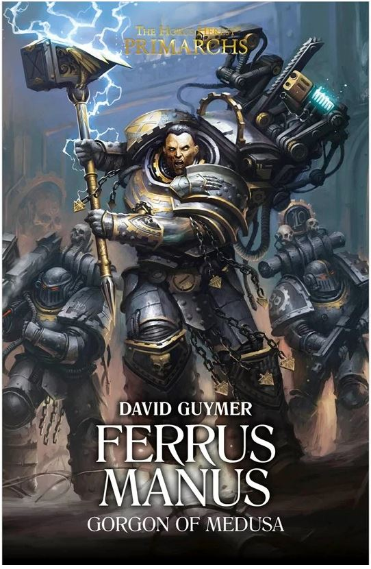

FERRUS MANUS: GORGON OF MEDUSA

Author: David Guymer
Format: Novel
Rumours that the Emperor will choose a Warmaster reach Ferrus Manus as a campaign against Gardinaal falters. He takes command of a mixed Imperial force, determined to make an example that cannot be ignored.
Introduction reviewed against Black Library’s description on 2026-09-27. The publisher page may contain spoilers.
Publication facts: publisher source, checked 2026-09-26.
Open this work in the interactive Archive to track reading progress and explore related works.